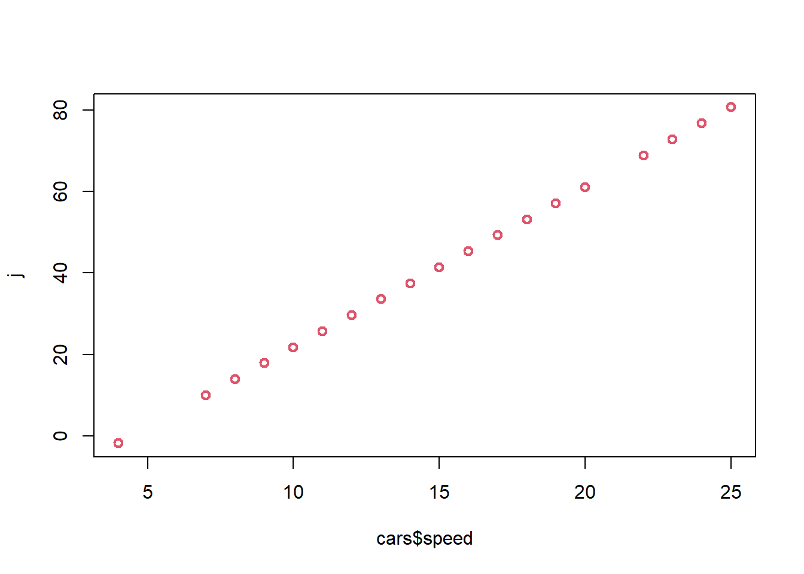
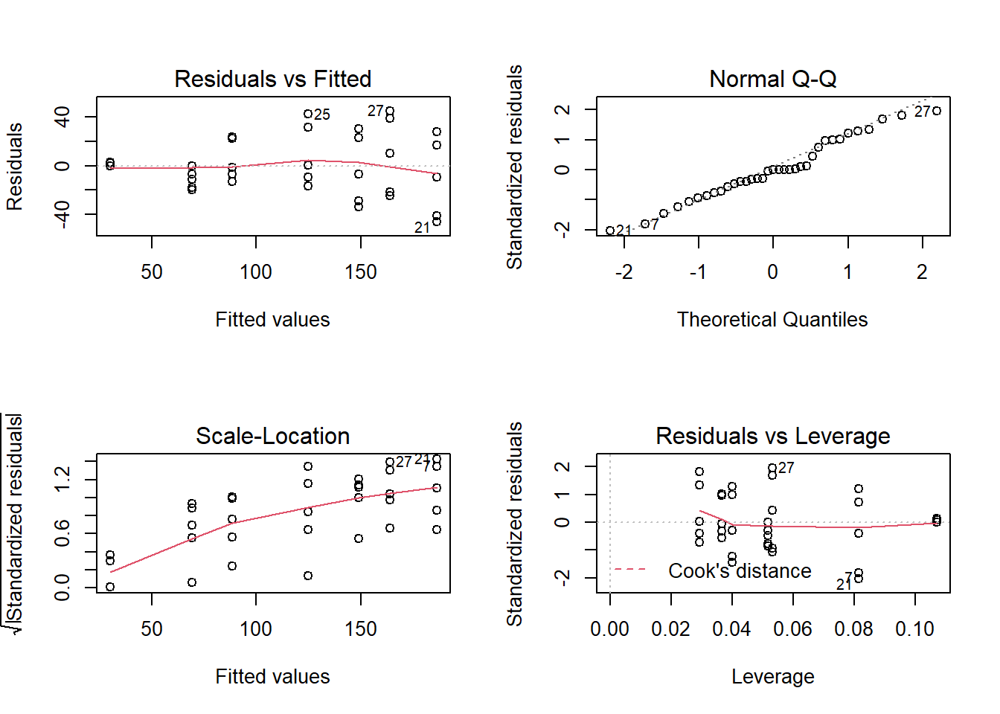

Regresión lineal
Gráfico de dispersión
Diagrama matemático que utiliza las coordenadas cartesianas para mostrar los valores de dos variables cuantitativas, de la forma (x,y), aunque también se puede incluir una variable cualitativa. Sirve para la detección de puntos atípicos.
En el siguiente diagrama se ilustra la presión atmosférica en relación a la temperatura
plot(pressure)
En el siguiente diagrama se ilustra el ancho y el largo de la hoja en relación al tipo de planta.
library(ggplot2)
p <- ggplot(iris, aes(x = Petal.Length, y = Petal.Width, colour = Species))
p <- p + geom_point()
p
Actividad
Elabore en su cuaderno un gráfico de dispersión de los siguientes datos, identificando con colores diferentes el tipo de tapa.
| Hojas | Peso | Tipo de tapa |
|---|---|---|
| 885 | 800 | dura |
| 1016 | 950 | dura |
| 1125 | 1050 | dura |
| 239 | 350 | dura |
| 701 | 750 | dura |
| 641 | 600 | dura |
| 1228 | 1075 | dura |
| 412 | 250 | blanda |
| 953 | 700 | blanda |
| 929 | 650 | blanda |
| 1492 | 975 | blanda |
| 419 | 350 | blanda |
| 1010 | 950 | blanda |
| 595 | 425 | blanda |
| 1034 | 725 | blanda |
Regresión lineal simple
Permite establecer asociaciones entre variables de interés, entre las cuáles la relación usual no es necesariamente de causa efecto. El objetivo es obtener estimaciones razonables de Y para distintos valores de X a partir de una muestra de n pares de valores (x1, y1), . . . ,(xn, yn).
El modelo más simple de regresión corresponde a: \[\Large y_i=\beta_0 +\beta_1 X_i+\varepsilon_i\]
Donde:
\(\Large y_i\)Es la variable
respuesta o dependiente para la i-ésima observación
\(\Large \beta_0\) Intercepto
\(\Large \beta_1\) Pendiente
\(\Large X_i\) Variable predictora
independiente para la i-ésima observación
\(\Large \varepsilon_i\) Error
aleatorio para la i-ésima observación
\[\Large \varepsilon_i \sim N (0,\sigma^2)\]
Objetivos de la regresión lineal
Construir un modelo que describa el efecto o relación entre una variable X sobre otra variable Y.
Obtener estimaciones puntuales de los parámetros de dicho modelo.
Estimar el valor promedio de Y para un valor de X
Predecir futuros de la variable respuesta Y
Ejemplos
Estudiar cómo influye la estatura del padre sobre la estatura del hijo.
Estimar el precio de una vivienda en función de su área.
Aproximar la calificación obtenida en una materia según el numero de horas de estudio semanal.
Métodos de estimación del modelo de regresión lineal
Estimación por máxima verosimilitud
En inglés maximum likelihood estimation (MLE), Consiste en encontrar los parámetros del modelo (coeficientes) que maximizan la probabilidad de obtener los datos observados.
\[\begin{eqnarray*} L\left(\beta_0, \beta_1, \sigma^2 | X_1, \ldots, X_n, Y_1, \ldots, Y_n \right)&=&\prod_{i=1}^n\frac{1}{\sqrt{2\pi\sigma^2}}\exp\left\{-\frac{1}{2\sigma^2}(Y_i-\beta_0-\beta_1X_i)^2\right\}\\ &=&\frac{1}{(2\pi\sigma^2)^{n/2}}\exp\left\{-\frac{1}{2\sigma^2}\sum_{i=1}^n(Y_i-\beta_0-\beta_1X_i)^2\right\} \end{eqnarray*}\]
Estimador de mínimos cuadrados ordinarios
Gauss propuso en 1809 el método de mínimos cuadrados para obtener los valores \(\hat{\beta_0}, \hat {\beta_1}\) que mejor se ajustan a los datos:
\[\Large y_i=\beta_0+\beta_1x_i+\varepsilon_i\]
El método consiste en minimizar la suma de los cuadrados de las distancias verticales entre los datos y las estimaciones, es decir, minimizar la suma de los residuos al cuadrado:
\[\Large \sum_{i=1}^n(y_i-\hat{y_i})^2= \sum_{i=1}^n (y_i-(\hat{\beta_0}+ \hat{\beta_1}x_i))^2\]
el resultado que se obtiene es:
\[\Large \hat{\beta_1}=\frac{S_{xy}}{S_{xx}}=\frac{cov(x,y)}{S_{xx}}=\frac{\sum_{i=1}^{n}(x_i-\bar{x})(y_i-\bar{y})}{\sum_{i=1}^{n}(x_i-\bar{x})^2}\]
A las cantidades \(\Large S_{xx}\) y \(\Large S_{xy}\) se les conoce como suma corregida de cuadrados y suma corregida de productos cruzados de x y y, respectivamente \[\Large \hat{\beta_0}=\bar{y}-\hat{\beta_1}\bar{x}\]
 Significado de \(\beta_0\) y
\(\beta_1\)
Significado de \(\beta_0\) y
\(\beta_1\)
\(\Large \beta_0\) es el intercepto
\(\Large \beta_1\) es el valor de la pendiente, es decir que por cada unidad que aumente variable independiente, la variable dependiente aumenta \(\beta_1\) unidades.
Otros tipos de mínimos cuadrados
| Tipo: Mínimos cuadrados | Definición | Usos |
|---|---|---|
| Lineales u Ordinarios (MCO) | Se utiliza en modelos con coeficientes lineales, como RLS o RLM. El objetivo es encontrar la línea en RLS o hiperplano en RLM, que minimice la suma de los residuos al cuadrado. | |
| Ponderados | Funciona cuando la varianza de los residuos no es constante. Asigna pesos a cada punto de datos, dan más importancia a las observaciones con menor varianza. | |
| Robustos | Diseñados para conjuntos de datos con valores atípicos. Utiliza técnicas iterativas de reponderación para reducir el impacto de los valores atípicos. | En modelación financiera, para tener en cuenta las caídas extremas del mercado. |
| No lineales | se utilizan cuando en modelos no lineales en sus coeficientes. requieren técnicas de optimización iterativas (como Gauss-Newton o Levenberg-Marquardt) para encontrar el mejor ajuste. | |
| Totales | útiles cuando la variable independiente como la dependiente tienen errores de medición. Este método tiene en cuenta los errores en todas las variables. | útil en astronomía y la geodesia (Medición de la forma de la Tierra y el campo gravitatorio), donde los errores de medición están presentes en todas las dimensiones debido al alto nivel de precisión necesario. |
| Generalizados | Aborda los retos que plantean los residuos correlacionados. los datos se transforman para aplicar los MCO, utilizando la matriz de covarianza de los residuos para tener en cuenta su estructura de correlación, lo que permite unas estimaciones más precisas de los parámetros. | Útil en el análisis de series temporales, en los que los residuos presentan autocorrelación |
Medidas de dependencia lineal
Covarianza
La covarianza indica el grado de variación conjunta de dos variables aleatorias respecto a sus medias
\[\Large cov(x,y)=\frac{\sum_{i=1}^{n}(x_i-\bar{x})(y_i-\bar{y})}{(n-1)}\] - Si hay relación lineal positiva, la covarianza será positiva y grande.
Si hay relación lineal negativa, la covarianza será negativa y grande en valor absoluto.
Si no hay relación entre las variables la covarianza será próxima a cero.
La covarianza depende de las unidades de medida de las variables.
Coeficiente de correlación
Indica la fuerza y la dirección de una relación lineal y proporcionalidad entre dos variables cuantitativas estadísticas.
\[\Large cor(x,y)=\frac{\sum_{i=1}^{n}(x_i-\bar{x})(y_i-\bar{y})} {\sqrt{\sum_{i=1}^{n}(x_i-\bar{x})^2\sum_{i=1}^{n}(y_i-\bar{y})^2 }}\]
Características del coeficiente de correlación
Rango entre -1 y 1
Valores cercanos a -1 la relación es fuertemente negativa.
Valores cercanos a 1 la relación es fuertemente positiva.
Valores cercanos a 0 la relación es débil, es decir no hay una relación lineal
| Rangos de correlación (r) | Grado de asociación |
|---|---|
| (0,0.2) | Débil, sin relación |
| (0.2,0.4) | Baja |
| (0.4,0.6) | Moderada |
| (0.6,0.8) | Fuerte |
| (0.8,1) | Muy fuerte |

Cómo obtener un modelo de regresión lineal simple en la calculadora
Prueba de significancia de la correlación
Podemos chequear la significancia de la correlación a través del siguiente juego de hipótesis.
\[\Large H_0: r=0\] \[\Large H_1: r\not=0\]
En R usamos la función cor.test() para estudiar la significación estadística del coeficiente y concluir sobre la posible existencia de relación lineal entre las variables.
Ejemplo Retomando el ejemplo de las flores, la base de datos iris contiene diferentes variables cuantitativas, largo y ancho del sépalo y largo y ancho del pétalo, asi como de las especies
head(iris)## Sepal.Length Sepal.Width Petal.Length Petal.Width Species
## 1 5.1 3.5 1.4 0.2 setosa
## 2 4.9 3.0 1.4 0.2 setosa
## 3 4.7 3.2 1.3 0.2 setosa
## 4 4.6 3.1 1.5 0.2 setosa
## 5 5.0 3.6 1.4 0.2 setosa
## 6 5.4 3.9 1.7 0.4 setosalibrary(PerformanceAnalytics)## Cargando paquete requerido: xts## Cargando paquete requerido: zoo##
## Adjuntando el paquete: 'zoo'## The following objects are masked from 'package:base':
##
## as.Date, as.Date.numeric##
## Adjuntando el paquete: 'PerformanceAnalytics'## The following object is masked from 'package:graphics':
##
## legendlibrary(ppcor)## Cargando paquete requerido: MASS#matriz de correlaciones
pcor(iris[1:4])## $estimate
## Sepal.Length Sepal.Width Petal.Length Petal.Width
## Sepal.Length 1.0000000 0.6285707 0.7190656 -0.3396174
## Sepal.Width 0.6285707 1.0000000 -0.6152919 0.3526260
## Petal.Length 0.7190656 -0.6152919 1.0000000 0.8707698
## Petal.Width -0.3396174 0.3526260 0.8707698 1.0000000
##
## $p.value
## Sepal.Length Sepal.Width Petal.Length Petal.Width
## Sepal.Length 0.000000e+00 1.199846e-17 7.656980e-25 2.412876e-05
## Sepal.Width 1.199846e-17 0.000000e+00 8.753029e-17 1.104958e-05
## Petal.Length 7.656980e-25 8.753029e-17 0.000000e+00 7.332477e-47
## Petal.Width 2.412876e-05 1.104958e-05 7.332477e-47 0.000000e+00
##
## $statistic
## Sepal.Length Sepal.Width Petal.Length Petal.Width
## Sepal.Length 0.000000 9.765380 12.502483 -4.362929
## Sepal.Width 9.765380 0.000000 -9.431189 4.553279
## Petal.Length 12.502483 -9.431189 0.000000 21.398708
## Petal.Width -4.362929 4.553279 21.398708 0.000000
##
## $n
## [1] 150
##
## $gp
## [1] 2
##
## $method
## [1] "pearson"#matriz con grafico de dispersión
chart.Correlation(iris[1:4], histogram = T, pch = 19,col=as.factor(iris$Species))
# install.packages("GGally")
library(GGally)
ggpairs(iris, columns = 1:4, aes(color = Species, alpha = 0.5),
lower = list(continuous = "smooth")) Medida de bondad de ajuste \(R^2\)
Mide la proporción de la variabilidad total observada en la respuesta que es explicada por la asociación lineal. Por ser una proporción, esta cantidad varía entre 0 y 1, siendo igual a 0 cuando todos los coeficientes de regresión ajustados son iguales a cero, y es igual a 1 si todas las observaciones caen sobre la superficie de regresión ajustada. Definido como:
\[\Large R^2=1-\frac{SSE}{SST}=1-\frac{\sum_{i=1}^n (y_i-\hat{y_i})^2}{\sum_{i=1}^n (y_i-\bar{y_i})^2}\] Donde
SSE: es la suma de cuadrados del error
SST: suma de cuadrados totales
Residuales
La diferencia de cada valor \(y_i\) de la variable respuesta y su estimación \(\hat{y_i}\) se llama residuo,se espera que los residuales tengan media cero y varianza de 1: \[\Large e_i= y_i- \hat{y_i}\]

A través del análisis de residuales del modelo es posible detectar la linealidad entre las variables X e Y, la media cero, varianza constante, incorrelación, y normalidad. son útiles para identificar valores atípicos, puntos influyentes y comprobar los supuestos del modelo.
Tipos de residuales
| Tipo | Definición | Fórmula | Función en R |
|---|---|---|---|
| Ordinarios | Diferencia de cada valor \(y_i\) de la variable respuesta y su estimación \(\hat{y_i}\) | \(e_i= y_i- \hat{y_i}\) | residuals(mod) |
| Estandarizados | Se calculan dividiendo el residual por su desviación estándar (MSE) | \[\large d_i=\frac{\hat \varepsilon_i}{\sqrt{MSE}}\] | rstandard(mod) |
| Estudentizados o jackknife | Se calculan utilizando una estimación de la desviación estándar del modelo, donde se elimina la observación actual. | \[ r_i=\frac{\hat \varepsilon_i}{\sqrt{MSE(1-h_{ii})}}\] | rstudent(mod) |
| Pearson | Se utilizan en modelos lineales generalizados, como la regresión logística y de Poisson | \[r_i=\frac{obs_i-esp_i}{\sqrt{var\quad esp_i}}\] | residuals(mod, type=‘pearson’) |
| PRESS | Mide el error que comete el modelo al predecir un punto que nunca ha visto | \[e_i=y_i-\hat y_{i(-i)}\] |
En general un residual grande, es cuando su valor es superior a 3 \((|di| > 3)\), lo cual es indicio de una observación atípica potencial.
Leverage o apalancamiento \(h_{ii}\)
Es una medida de qué tan lejos están los valores de las variables predictoras (variables X) de una observación específica con respecto a la media de todas las variables predictoras.
Alto Leverage: Se encuentra geográficamente lejos del “centro de gravedad” de los datos en el espacio de las variables X. Estos puntos tienen un peso desproporcionado en la determinación de la pendiente de la línea de regresión.
Bajo Leverage: Cerca de la media de las variables X y tiene un impacto mínimo en la forma final de la línea de regresión.
Fórmula
El apalancamiento para la i-ésima observación, denotado como \(h_{ii}\), es el i-ésimo elemento diagonal de la matriz hat H.
\[h_{ii}=\frac{1}{n}+\frac{(x_i-\bar x)^2}{\sum_{j=1}^n (x_j-\bar x)^2}\]
Otros diagnósticos con residuales grandes
| Nombre | Definición | Cómo se detecta | Rstudio |
|---|---|---|---|
| Outlier | Es un valor atípico con un valor Y (variable dependiente) inusual o extremo | si \(d_i\) ó \(r_i\) son mayores a 3 | outlierTest(md) |
| Punto Influyente | Punto que si se elimina del conjunto de datos, cambiaría los coeficientes del modelo de regresión | las observaciones que presenten Distancia de cook \(D_i>1\) | influence.measures(md) |
| Punto balanceo | Afecta las medidas de bondad de ajuste como \(R^2\) | influence.measures(md) |
Distancia de cook \(D_i\)
Es una medida de cómo influye la observación i-ésima sobre la estimación de β al ser retirada del conjunto de datos. Una distancia de Cook grande significa que una observación tiene un peso grande en la estimación de β.
Supuestos de los residuales
- Normalidad
- Varianza constante
- Valores incorrelacionados
Normalidad
Se puede evaluar mediante el gráfico qqplot, en el cual los puntos residuales deben estar alineados con la diagonal, dicha normalidad también se puede evaluar con la prueba de normalidad de shapiro- wilk, con el juego de hipótesis:
\(H_o:\)Los residuos son normales
\(H_1:\)Los residuos no son normales
Varianza constante
Mediante gráficos de residuales vs. respuesta ajustada y vs. predictora X. Los residuos están distribuidos alrededor del cero y el gráfico no presenta ninguna tendencia, entonces el modelo se considera adecuado.
Si se observa una tendencia, estaríamos violando el supuesto de linealidad,
Si se observa una nube de puntos en forma de embudo, podemos tener problemas con el supuesto de homogeneidad de varianzas, también conocido como supuesto de homocedasticidad.
Prueba de homocedasticidad
La homocedasticidad se refiere a la propiedad en la que la varianza de los errores del modelo se mantiene constante a lo largo de todas las observaciones de la variable independiente.

La prueba de hipótesis para verificar la homogeneidad de varianzas es:
\[H_0:\quad Los \quad errores \quad tienen \quad varianza \quad constante\]
\[H_1:\quad Los \quad errores \quad no \quad tienen \quad varianza \quad constante\]
Prueba de Breusch-Pagan (1979)
Consiste en ajustar un modelo de regresión lineal con variable respuesta dada por residuales del modelo original al cuadrado \(e_i^2\) y como covariables las variables del modelo original.
Por ejemplo, si se tienen k=2 covariables para explicar a Y, entonces el modelo de regresión para estudiar la homocedasticidad es:
\[e^2_i= δ_0+δ_1x_1+δ_2x_2+u\]
Si se concluye que \(δ_1=δ_2=0\), significa que los residuales no son función de las covariables del modelo.
La función bptest del paquete lmtest Zeileis and Hothorn (2002) implementa esta prueba.
Incorrelación
Los errores del modelo son independientes entre sí. implica que el valor de un residuo no proporciona información sobre el valor de otro residuo, es decir, no hay autocorrelación. Esta independencia se verifica comúnmente analizando gráficos de residuos o mediante el test de Durbin-Watson o El test de Breusch–Godfrey.
Juego de hipótesis
\(H_0\): Residuos incorrelacionados
\(H_1\): Residuos correlacionados
Ejemplo
Los siguientes datos proveen las velocidades en metros por segundo y las distancias necesarias para frenar en metros
head(cars)## speed dist
## 1 4 2
## 2 4 10
## 3 7 4
## 4 7 22
## 5 8 16
## 6 9 10En este caso ¿Cuál es la variable dependiente e independiente?
Para este modelo el modelo de regresión lineal simple es:
\[\Large \hat{y}=-17.57+3.93x\] Donde
X representa la velocidad en metros por segundo
y es la distancia de frenado en metros
Por cada unidad que aumenta la velocidad la distancia de frenado aumenta 3.93 unidades
Resultados del modelo en R
library(lmtest)
cor(cars$speed,cars$dist)## [1] 0.8068949##Ajuste modelo de regresión lineal simple
md=lm(cars$dist~cars$speed)
summary(md)##
## Call:
## lm(formula = cars$dist ~ cars$speed)
##
## Residuals:
## Min 1Q Median 3Q Max
## -29.069 -9.525 -2.272 9.215 43.201
##
## Coefficients:
## Estimate Std. Error t value Pr(>|t|)
## (Intercept) -17.5791 6.7584 -2.601 0.0123 *
## cars$speed 3.9324 0.4155 9.464 1.49e-12 ***
## ---
## Signif. codes: 0 '***' 0.001 '**' 0.01 '*' 0.05 '.' 0.1 ' ' 1
##
## Residual standard error: 15.38 on 48 degrees of freedom
## Multiple R-squared: 0.6511, Adjusted R-squared: 0.6438
## F-statistic: 89.57 on 1 and 48 DF, p-value: 1.49e-12## Grafica de dispersión con la linea estimada sobrepuesta
plot(cars$speed,cars$dist, col=2, lwd=2)
abline(a=-17.57,b=3.93)## Analisis de residuales
## tipos de residuales
cbind(ei=residuals(md, type='working'),
pi=residuals(md, type='pearson'),
di=rstandard(md),
ri=rstudent(md))## ei pi di ri
## 1 3.849460 3.849460 0.26604155 0.26345000
## 2 11.849460 11.849460 0.81893273 0.81607841
## 3 -5.947766 -5.947766 -0.40134618 -0.39781154
## 4 12.052234 12.052234 0.81326629 0.81035256
## 5 2.119825 2.119825 0.14216236 0.14070334
## 6 -7.812584 -7.812584 -0.52115255 -0.51716052
## 7 -3.744993 -3.744993 -0.24869180 -0.24624632
## 8 4.255007 4.255007 0.28256008 0.27983408
## 9 12.255007 12.255007 0.81381197 0.81090388
## 10 -8.677401 -8.677401 -0.57409795 -0.57004675
## 11 2.322599 2.322599 0.15366341 0.15209173
## 12 -15.609810 -15.609810 -1.02971654 -1.03037790
## 13 -9.609810 -9.609810 -0.63392061 -0.62992492
## 14 -5.609810 -5.609810 -0.37005667 -0.36670509
## 15 -1.609810 -1.609810 -0.10619272 -0.10509307
## 16 -7.542219 -7.542219 -0.49644946 -0.49251696
## 17 0.457781 0.457781 0.03013240 0.02981715
## 18 0.457781 0.457781 0.03013240 0.02981715
## 19 12.457781 12.457781 0.82000518 0.81716230
## 20 -11.474628 -11.474628 -0.75422016 -0.75078438
## 21 -1.474628 -1.474628 -0.09692637 -0.09592079
## 22 22.525372 22.525372 1.48057874 1.49972043
## 23 42.525372 42.525372 2.79516632 3.02282876
## 24 -21.407036 -21.407036 -1.40612757 -1.42097720
## 25 -15.407036 -15.407036 -1.01201579 -1.01227617
## 26 12.592964 12.592964 0.82717256 0.82440767
## 27 -13.339445 -13.339445 -0.87627072 -0.87411459
## 28 -5.339445 -5.339445 -0.35074918 -0.34752195
## 29 -17.271854 -17.271854 -1.13552237 -1.13903469
## 30 -9.271854 -9.271854 -0.60956963 -0.60553485
## 31 0.728146 0.728146 0.04787130 0.04737114
## 32 -11.204263 -11.204263 -0.73777117 -0.73422040
## 33 2.795737 2.795737 0.18409193 0.18222855
## 34 22.795737 22.795737 1.50103921 1.52145888
## 35 30.795737 30.795737 2.02781813 2.09848208
## 36 -21.136672 -21.136672 -1.39503525 -1.40929208
## 37 -11.136672 -11.136672 -0.73502818 -0.73145948
## 38 10.863328 10.863328 0.71698735 0.71330941
## 39 -29.069080 -29.069080 -1.92452335 -1.98238877
## 40 -13.069080 -13.069080 -0.86524066 -0.86293622
## 41 -9.069080 -9.069080 -0.60041999 -0.59637646
## 42 -5.069080 -5.069080 -0.33559931 -0.33247538
## 43 2.930920 2.930920 0.19404203 0.19208548
## 44 -2.933898 -2.933898 -0.19590672 -0.19393283
## 45 -18.866307 -18.866307 -1.26671228 -1.27493857
## 46 -6.798715 -6.798715 -0.45938126 -0.45557342
## 47 15.201285 15.201285 1.02713306 1.02773460
## 48 16.201285 16.201285 1.09470190 1.09701943
## 49 43.201285 43.201285 2.91906038 3.18499284
## 50 4.268876 4.268876 0.29053451 0.28774529##Graficos de residuales
par(mfrow=c(2,2))
plot(md,col='deepskyblue4', pch=19)
## prueba de normalidad en residuales del modelo
## Ho:Los residuos son normales
## H1:Los residuos no son normales
rr=residuals(md)
shapiro.test(rr)##
## Shapiro-Wilk normality test
##
## data: rr
## W = 0.94509, p-value = 0.02152##prueba de varianza constante
## H0: Los errores tienen varianza constante
## H1: Los errores no tienen varianza constante
bptest(md)##
## studentized Breusch-Pagan test
##
## data: md
## BP = 3.2149, df = 1, p-value = 0.07297###prueba de incorrelación de residuales del modelo
## H0: Residuos incorrelacionados
## H1: Residuos correlacionados
dwtest(md, data = cars)##
## Durbin-Watson test
##
## data: md
## DW = 1.6762, p-value = 0.09522
## alternative hypothesis: true autocorrelation is greater than 0bgtest(md, order =1, data = cars)##
## Breusch-Godfrey test for serial correlation of order up to 1
##
## data: md
## LM test = 1.2908, df = 1, p-value = 0.2559library(car)## Cargando paquete requerido: carData## detección de puntos de influencia
influence.measures(md)## Influence measures of
## lm(formula = cars$dist ~ cars$speed) :
##
## dfb.1_ dfb.crs. dffit cov.r cook.d hat inf
## 1 0.09440 -0.08625 0.09490 1.175 4.59e-03 0.1149 *
## 2 0.29242 -0.26716 0.29398 1.146 4.35e-02 0.1149 *
## 3 -0.10750 0.09369 -0.11040 1.116 6.20e-03 0.0715
## 4 0.21898 -0.19085 0.22488 1.093 2.55e-02 0.0715
## 5 0.03408 -0.02901 0.03554 1.109 6.45e-04 0.0600
## 6 -0.11101 0.09174 -0.11852 1.085 7.13e-03 0.0499
## 7 -0.04618 0.03669 -0.05110 1.085 1.33e-03 0.0413
## 8 0.05248 -0.04170 0.05807 1.084 1.72e-03 0.0413
## 9 0.15209 -0.12083 0.16827 1.058 1.43e-02 0.0413
## 10 -0.09168 0.06895 -0.10716 1.065 5.82e-03 0.0341
## 11 0.02446 -0.01840 0.02859 1.079 4.17e-04 0.0341
## 12 -0.13849 0.09602 -0.17628 1.027 1.55e-02 0.0284
## 13 -0.08467 0.05870 -0.10777 1.056 5.88e-03 0.0284
## 14 -0.04929 0.03417 -0.06274 1.067 2.00e-03 0.0284
## 15 -0.01413 0.00979 -0.01798 1.073 1.65e-04 0.0284
## 16 -0.05330 0.03233 -0.07757 1.058 3.06e-03 0.0242
## 17 0.00323 -0.00196 0.00470 1.069 1.13e-05 0.0242
## 18 0.00323 -0.00196 0.00470 1.069 1.13e-05 0.0242
## 19 0.08843 -0.05364 0.12870 1.039 8.34e-03 0.0242
## 20 -0.06172 0.02871 -0.11111 1.041 6.23e-03 0.0214
## 21 -0.00789 0.00367 -0.01419 1.065 1.03e-04 0.0214
## 22 0.12329 -0.05734 0.22194 0.971 2.40e-02 0.0214
## 23 0.24851 -0.11558 0.44734 0.747 8.56e-02 0.0214 *
## 24 -0.08002 0.01551 -0.20360 0.979 2.03e-02 0.0201
## 25 -0.05700 0.01105 -0.14504 1.019 1.05e-02 0.0201
## 26 0.04643 -0.00900 0.11812 1.034 7.02e-03 0.0201
## 27 -0.02664 -0.01432 -0.12571 1.031 7.94e-03 0.0203
## 28 -0.01059 -0.00569 -0.04998 1.059 1.27e-03 0.0203
## 29 -0.00528 -0.04978 -0.17031 1.010 1.44e-02 0.0219
## 30 -0.00281 -0.02647 -0.09054 1.050 4.15e-03 0.0219
## 31 0.00022 0.00207 0.00708 1.066 2.56e-05 0.0219
## 32 0.01561 -0.05223 -0.11741 1.046 6.96e-03 0.0249
## 33 -0.00387 0.01296 0.02914 1.068 4.33e-04 0.0249
## 34 -0.03235 0.10823 0.24330 0.972 2.88e-02 0.0249
## 35 -0.04462 0.14928 0.33557 0.894 5.26e-02 0.0249
## 36 0.06663 -0.13914 -0.24553 0.989 2.95e-02 0.0295
## 37 0.03458 -0.07221 -0.12744 1.051 8.20e-03 0.0295
## 38 -0.03372 0.07042 0.12428 1.052 7.80e-03 0.0295
## 39 0.14564 -0.25086 -0.38002 0.921 6.81e-02 0.0354
## 40 0.06340 -0.10920 -0.16542 1.048 1.38e-02 0.0354
## 41 0.04382 -0.07547 -0.11432 1.065 6.62e-03 0.0354
## 42 0.02443 -0.04207 -0.06373 1.076 2.07e-03 0.0354
## 43 -0.01411 0.02431 0.03682 1.080 6.92e-04 0.0354
## 44 0.02456 -0.03551 -0.04533 1.098 1.05e-03 0.0518
## 45 0.19602 -0.27032 -0.32823 1.039 5.32e-02 0.0622
## 46 0.08260 -0.11000 -0.12877 1.116 8.43e-03 0.0740
## 47 -0.18634 0.24815 0.29050 1.077 4.21e-02 0.0740
## 48 -0.19890 0.26488 0.31008 1.071 4.79e-02 0.0740
## 49 -0.57747 0.76902 0.90027 0.762 3.40e-01 0.0740 *
## 50 -0.06025 0.07812 0.08898 1.139 4.04e-03 0.0873 *library(car)
influenceIndexPlot(md, vars="Cook")
## detección de outlier
outlierTest(md, n.max=4)## No Studentized residuals with Bonferroni p < 0.05
## Largest |rstudent|:
## rstudent unadjusted p-value Bonferroni p
## 49 3.184993 0.0025707 0.12853## Quitando observaciones atipicas y puntos de influencia
cars2<-cars[-c(1,2,23,49,50),]
cars2## speed dist
## 3 7 4
## 4 7 22
## 5 8 16
## 6 9 10
## 7 10 18
## 8 10 26
## 9 10 34
## 10 11 17
## 11 11 28
## 12 12 14
## 13 12 20
## 14 12 24
## 15 12 28
## 16 13 26
## 17 13 34
## 18 13 34
## 19 13 46
## 20 14 26
## 21 14 36
## 22 14 60
## 24 15 20
## 25 15 26
## 26 15 54
## 27 16 32
## 28 16 40
## 29 17 32
## 30 17 40
## 31 17 50
## 32 18 42
## 33 18 56
## 34 18 76
## 35 18 84
## 36 19 36
## 37 19 46
## 38 19 68
## 39 20 32
## 40 20 48
## 41 20 52
## 42 20 56
## 43 20 64
## 44 22 66
## 45 23 54
## 46 24 70
## 47 24 92
## 48 24 93##volviendo a estimar el modelo
md1=lm(cars2$dist~cars2$speed)
summary(md1)##
## Call:
## lm(formula = cars2$dist ~ cars2$speed)
##
## Residuals:
## Min 1Q Median 3Q Max
## -25.961 -8.199 -2.336 5.664 33.564
##
## Coefficients:
## Estimate Std. Error t value Pr(>|t|)
## (Intercept) -17.2886 6.8440 -2.526 0.0153 *
## cars2$speed 3.7625 0.4227 8.902 2.61e-11 ***
## ---
## Signif. codes: 0 '***' 0.001 '**' 0.01 '*' 0.05 '.' 0.1 ' ' 1
##
## Residual standard error: 12.97 on 43 degrees of freedom
## Multiple R-squared: 0.6482, Adjusted R-squared: 0.6401
## F-statistic: 79.25 on 1 and 43 DF, p-value: 2.605e-11AIC(md,md1)## Warning in AIC.default(md, md1): No todos los modelos se han ajustado usando el
## mismo número de observaciones## df AIC
## md 3 419.1569
## md1 3 362.2737Validación cruzada de ambos modelos
| modelo | AIC | \(R^2\) | \(\beta_0\) | \(\beta_1\) | error |
|---|---|---|---|---|---|
| Completo | 419.15 | 65.11 | -17.58 | 3.93 | 15.38 |
| Sin outlier | 362.27 | 64.82 | -17.28 | 3.76 | 12.97 |
Analisis de varianza ANOVA
Suma de cuadrados del error
La varianza de los términos de error \(\varepsilon_i\), es decir, \(V[\varepsilon_i]=\sigma^2\), da un indicador de la variabilidad de las distribuciones de probabilidad de Y para los distintos valores de X. En este caso la suma cuadrática de errores o residuales es:
\[\Large SSE=\sum_{i=1}^{n}(y_i-\hat{y_i})^2=\sum_{i=1}^n e^2_i\] Media cuadrática del error MSE
La SSE tiene asociada n−2 grados de libertad (gl), pues se pierden 2 (gl) al estimar \(\beta_0\) y \(\beta_1\), para obtener a \(\hat{y_i}\), de lo anterior se obtiene la media cuadática de errores (MSE) dada por:
\[\Large MSE=\frac{SSE}{n-2}=\frac{\sum_{i=1}^{n}(y_i-\hat{y_i})^2}{n-2}=\frac{\sum_{i=1}^n e^2_i}{n-2}\]
Se puede demostrar que MSE, es un estimador insesgado de \(\Large \sigma^2\) para el modelo de RLS, es decir que:
\[\Large \sigma^2=MSE\] Además \[\Large E(MSE)=\sigma\]
Suma total de cuadrados
La medida de variación de y alrededor de la la media muestral \(\bar{y}\) es: \[\Large SST=\sum_{i=1}^n(Y_i-\bar{Y})^2\]
Suma cuadrática de regresión
La diferencia entre la SST y la SSE se denota por:
\[\Large SSR=\sum_{i=1}^n(\hat{Y_i}-\bar{Y})^2\]
La SSR es una medida de la parte de la variabilidad de las observaciones \(y_i\), la cual está asociada con la línea de regresión ajustada.
De lo anterior, se obtiene la identidad fundamental del análisis de varianza, la cual está dada por:
\[\Large SST = SSR + SSE\]
Medias cuadráticas se obtienen de dividir las SS por sus respectivos grados de libertad
| Suma de cuadrados | Fórmula | componente | variabilidad | Grados de libertad | medias cuadráticas |
|---|---|---|---|---|---|
| SSR | \(\sum_{i=1}^n(\hat{Y_i}-\bar{Y})^2\) | regresión | del modelo o por las variables regresoras | 1 | \(MSR=\frac{SSR}{1}\) |
| SSE | \(\sum_{i=1}^{n}(y_i-\hat{y_i})^2\) | error | no explicada por el modelo o error | n−2 | \(MSE=\frac{SSE}{n-2}\) |
| SST | \(\sum_{i=1}^n(Y_i-\bar{Y})^2\) | totales | muestral total | n−1 | \(MST=\frac{SST}{n-1}\) |
Tabla de resumen del análisis de varianza
| Factor | Grados de libertad | Suma de cuadrados | Medias cuadráticas | Estadístico |
|---|---|---|---|---|
| Regresión | 1 | SSR | MSR | Fc |
| Error | n-2 | SSE | MSE | |
| Total | n-1 | SST | MST |
Test lineal general
Se desea probar la significancia del modelo de regresión lineal
Hipótesis nula:
\(\Large H_0:\) el modelo de regresión no es significativo
Hipótesis alternativa:
\(\Large H_1:\): el modelo de regresión es significativo
El estadístico de prueba corresponde a
\[\Large F_c=\frac{MSR}{MSE}\sim F_{(1,n-2)}\]
Prueba de significancia de los parámetros
Considere las siguientes afirmaciones, las cuales son llamadas pruebas de hipótesis o prueba de significancia de la regresión:
Hipótesis nula:
\(\Large H_0: \beta_i=0\) el parámetro no es significativo
Hipótesis alternativa:
\(\Large H_1: \beta_i \not= 0\): el parámeto es significativo
Test de carencia de ajuste
Sirve para Verificar si el modelo lineal ajusta adecuadamente a los datos. El test asume que los valores de Y dado X son:
- Independientes,
- Se distribuyen en forma normal
- Tienen varianza constante
Esta prueba requiere que en uno o más valores de X haya más de una observación de Y. Los ensayos repetidos de manera independiente para el mismo nivel de la variable predictora son denominados replicaciones.
Para explicar en qué consiste esta prueba, es necesario modificar la notación usada de la siguiente manera, asumiendo que tenemos réplicas de la respuesta en un valor o nivel dado de X:
\(Y_{ij}\) La respuesta i-ésima en el j –ésimo nivel de X.
\(X_j\) El j-ésimo nivel de valores de X, supondremos j=1, 2,…, k
\(n_j\) Número de observaciones de Y tomadas en el j-esimo nivel de X.
Se define primero un modelo lineal general (modelo completo) que corresponde a
\[ Y_{ij}=\mu_j+\varepsilon_{ij}\]
donde \(\mu_j=E(y_{ij})\), es decir, es la media de la variable respuesta en el j-ésimo nivel de X.
Para el anterior modelo, los estimadores de máxima verosimilitud corresponden a \(\hat \mu=\bar Y_j\), es decir, la media muestral de Y en el nivel j de X. Esta cantidad también corresponde al valor predicho para Y en el nivel j de X. Por tanto, la suma de cuadrados del error del modelo general o suma de cuadrados del error puro cuyos grados de libertad son n-k, es dada por:
\[SSPE=\sum_{j=1}^k\sum_{i=1}^{n_j}({Y_{ij}-\bar Y_j})^2\] Se define ahora el modelo lineal reducido para la hipótesis nula de la prueba, el cual, para el caso de la regresión lineal es \(E(Y|X)=\beta_0+\beta_1 X\) luego la prueba formula que:
\[H_0=E(Y|X)=\beta_0+\beta_1 X \] \[H_1=E(Y|X)\neq \beta_0+\beta_1 X \]
La suma de cuadrados del error:
\[SSE:\sum_{i=1}^{n}\sum_{j=1}^{k}(y_{ij}-\hat{y_j})^2\] se puede descomponer en:
\[SSE=SSPE+SSLOF\]
suma de cuadrados del error=suma de cuadrados del error puro + suma de cuadrados de carencia de ajuste
\[SSLOF=SSE-SSPE\]
El estadístico de prueba es:
\[F_0=\frac{SSLOF/(k-2)}{SSPE/(n-k)}\]
En la tabla ANOVA puede presentar el test de carencia de ajuste descomponiendo el SSE del modelo:
| Fuente de variación | Grados de libertad | Suma de cuadrados | Medias cuadráticas | Estadístico |
|---|---|---|---|---|
| Regresión | 1 | SSR | MSR | Fc |
| Error | n-2 | SSE | MSE | |
| carencia de ajuste | k-2 | SSLOF | MSLOF | FO |
| Error puro | n-k | SSPE | ||
| Total | n-1 | SST |
En general, la prueba de carencia de ajuste puede aplicarse a otras funciones de regresión, sólo se requiere modificar los grados de libertad del SSLOF, que en general corresponden a k-p , donde p es el número de parámetros en la función de regresión. Para el caso específico de la regresión lineal simple, p=2.
Ejemplo
Los siguientes datos se recolectaron con el fin de determinar la relación existente entre el peso corporal del ganado vacuno (X) y la rapidez de eliminación metabólica/peso corporal (Y). Los datos que aparecen a continuación son el resultado de varias realizaciones del experimento, en distintos niveles del peso.
peso=c(110,110,110,230,230,230,360,360,360,360,505,505,505,505)
elimina=c(235,198,173,174,149,124,115,130,102,95,122,112,98,96)
datos=data.frame(peso, elimina)
#ajusta el modelo lineal
regre=lm(elimina~peso)
summary(regre)##
## Call:
## lm(formula = elimina ~ peso)
##
## Residuals:
## Min 1Q Median 3Q Max
## -34.553 -13.595 2.138 14.381 48.185
##
## Coefficients:
## Estimate Std. Error t value Pr(>|t|)
## (Intercept) 212.72093 15.78406 13.48 1.31e-08 ***
## peso -0.23551 0.04486 -5.25 0.000204 ***
## ---
## Signif. codes: 0 '***' 0.001 '**' 0.01 '*' 0.05 '.' 0.1 ' ' 1
##
## Residual standard error: 24.56 on 12 degrees of freedom
## Multiple R-squared: 0.6967, Adjusted R-squared: 0.6714
## F-statistic: 27.57 on 1 and 12 DF, p-value: 0.0002043anova(regre)## Analysis of Variance Table
##
## Response: elimina
## Df Sum Sq Mean Sq F value Pr(>F)
## peso 1 16634 16634.2 27.567 0.0002043 ***
## Residuals 12 7241 603.4
## ---
## Signif. codes: 0 '***' 0.001 '**' 0.01 '*' 0.05 '.' 0.1 ' ' 1plot(peso,elimina)
abline(a=212.72,b=-0.23,col=2)
## residuales del modelo
res=residuals(regre)
shapiro.test(res)##
## Shapiro-Wilk normality test
##
## data: res
## W = 0.97124, p-value = 0.8928#prueba de carencia de ajuste
regres1=lm(elimina~peso) #Ajusta modelo de regresión y da el error total SSE
regres2=lm(elimina~factor(peso)) #Ajusta modelo lineal general o completo y da su error puro
#SSPE
anova(regres1,regres2) #Compara los dos modelos anteriores y obtenemos el SSLOF, los grados## Analysis of Variance Table
##
## Model 1: elimina ~ peso
## Model 2: elimina ~ factor(peso)
## Res.Df RSS Df Sum of Sq F Pr(>F)
## 1 12 7241
## 2 10 4361 2 2880 3.302 0.07924 .
## ---
## Signif. codes: 0 '***' 0.001 '**' 0.01 '*' 0.05 '.' 0.1 ' ' 1#de libertad correspondientes,Observe que la variable explicatoria X fue observada en cuatro niveles: 110, 230, 360 y 505, es decir, tenemos réplicas de la variable respuesta en al menos un nivel de X.
- Indique qué información nos proporciona el análisis del gráfico de Y vs. X acerca de:
El tipo de relación funcional entre Y vs. X (¿lineal o no lineal?)
El comportamiento de la varianza de Y en cada nivel de X observado ¿Es constante o no? ¿Si no es constante, cómo cambia?
- Ajuste el modelo de regresión lineal simple y determine lo siguiente
Interprete los valores ajustados de los parámetros.
Realice la prueba de significancia de la regresión (mediante la tabla ANOVA)
Realice los test de significancia de cada parámetros (pruebas t).
- Calcule los residuales y responda lo siguiente:
De acuerdo a los gráficos de residuales, determine si el supuesto de varianza constante para los respectivos errores se cumple o no.
Ahora realice los test de normalidad sobre los errores del modelo, use e interprete los resultados del test de Shapiro Wilk y el gráfico de probabilidad.
- Considere de nuevo los gráficos de residuales vs. X, calcule la ANOVA para el test de carencia de ajuste del modelo y determine si
¿Hay carencia de ajuste del modelo postulado para la respectiva respuesta media? (Formule completamente el test de hipótesis, el estadístico de prueba y los resultados)
Caso que exista carencia de ajuste ¿Qué modelos serían más apropiados? ¿Por qué?
Validación cruzada
Se utiliza para:
Comparar la Regresión Lineal con otros modelos predictivos.
Seleccionar el número de predictores o el grado polinomial adecuado.
Akaike Information Criterion (AIC)
El AIC se define como:
\[AIC=-2*LogLik+k*n_{par}\] donde:
\(LogLik\) Logverosimilitud del modelo para el vector de parámetros Θ
k valor de penalización por el exceso de parámetros
\(n_{par}\) corresponde al número de parámetros del modelo.
Se debe recordar siempre que el mejor modelo es aquel que:
Tiene mayor \(LogLik\)
Tiene menor \(AIC\)
Cuando el valor de penalización \(k=log(n)\) entonces el \(AIC\) se llama \(BIC\)
\(R^2\) Coeficiente de determinación muestral
Proviene de la razón SSR/SST (Suma de cuadrados de la regresión/ suma de cuadrados totales).
Proporción de la variabilidad total observada en la variable respuesta, que es explicada por la relación lineal con la variable predictora considerada.
No garantiza que los supuestos básicos del modelo lineal se estén cumpliendo.
AIC
pressure## temperature pressure
## 1 0 0.0002
## 2 20 0.0012
## 3 40 0.0060
## 4 60 0.0300
## 5 80 0.0900
## 6 100 0.2700
## 7 120 0.7500
## 8 140 1.8500
## 9 160 4.2000
## 10 180 8.8000
## 11 200 17.3000
## 12 220 32.1000
## 13 240 57.0000
## 14 260 96.0000
## 15 280 157.0000
## 16 300 247.0000
## 17 320 376.0000
## 18 340 558.0000
## 19 360 806.0000Error de pronóstico medio MAPE
Es importante evaluar la capacidad predictiva del modelo. Esta medida compara promedia la diferencia entre los valores observados con los pronosticados. Dado por la fórmula:
\[\Large MAPE=\frac{\sum_{i=1}^n |\frac{y_i-\hat{y_i}}{y_i}|}{n}\]
Transformaciones
sea el modelo lineal de la forma:
\[Y_i=\beta_0+\beta_1x+\varepsilon_i\] En el caso de que los errores no resulten normales o la varianza no sea constante, se pueden realizar transformaciones sobre la variable respuesta y/o sobre las variables predictoras ejemplo:
| Denominación | transformación | modelo |
|---|---|---|
| Exponencial multiplicativo | \(log(Y_i)=\beta_0*+\beta_1 X_i+\varepsilon_i*\) | \(y=\beta_0*e^{\beta_1x}\varepsilon\) |
| Potencial multiplicativo | \(Y_i=\beta_0*+\beta_1log(X_i)+\varepsilon_i*\) | \(Y_i=\beta_0*X^{\beta_1}\varepsilon\) |
| Logarítmico | \(Y_i=\beta_0+\beta_1 ln{X_i}+\varepsilon_i\) | \(Y_i=\beta_0+\beta_1 ln{X_i}+\varepsilon_i\) |
| Recíproco | \(Y_i=\beta_0*+\beta_1 (1/X_i)+\varepsilon_i*\) | \(Y_i=\beta_0*+\beta_1 (1/X_i)+\varepsilon_i*\) |
Se debe tener cuidado cuando se transforma la variable respuesta, ya que pueden resultar nuevas variables carentes de interpretación práctica según el fenómeno o contexto al cual pertenece la variable respuesta.
Para ver un ejemplo puede consultar el libro de regresión lineal del profesor fredy Aqui
Si las desviaciones respecto al supuesto de normalidad son severas, y ninguna transformación resulta útil y/o interpretable, existe otra alternativa, los llamados modelos lineales generalizados con los cuales se pueden modelar respuestas que no se distribuyen normales; sin embargo, tales modelos están más allá del alcance de este curso.
Regresión lineal múltiple
Se desea modelar la variabilidad total de una variable respuesta de interés, en función de relaciones lineales con dos o más variables predictoras, cuantitativas y cualitatiivas, formuladas simultáneamente en un único modelo.
Las variables predictoras pueden ser:
Cuantitativas, caso en el cual se supone se miden sin error (o el error es despreciable).
Cualitativas o categóricas, en este caso su manejo en el modelo se realiza a través de la definición de variables indicadoras, las cuales toman valores de 0 ó 1.
Suponemos en principio que las variables predictoras guardan poca asociación lineal entre sí, es decir, cada variable predictora aporta información independiente de las demás predictoras presentes en el modelo (hasta cierto grado, la información aportada por cada una no es redundante). La ecuación del modelo de regresión en este caso es:
\[\Large y_i=\beta_0+\beta_1x_{i1}+\beta_2x_{i2}+...+\beta_kx_{ik}\varepsilon_i\]
Regresión lineal con efectos de interacción
Cuando los efectos de una variable predictora depende de los niveles de otras variables predictoras incluidas en el modelo.
Por ejemplo, suponga un modelo de regresión con las variables predictoras\(X_1\) y \(X_2\), que incluye tanto los efectos principales como el de interacción de estas dos variables. Este modelo corresponde a:
\[\large Y_i=\beta_0+\beta_1 X_{i1}+\beta_2 X_{i2}+\beta_3X_{1}X_2+\varepsilon_i\]
El término de interacción es representado por \(\beta_3X_{1}X_2\). Para expresar el anterior modelo en términos del modelo lineal general, definimos simplemente \(X_3=X_{1}X_2\) y rescribimos el modelo como:
\[\large Y_i=\beta_0+\beta_1 X_{i1}+\beta_2 X_{i2}+\beta_3X_{3}+\varepsilon_i\]
Regresión lineal con variables indicadoras
Suponga que en un modelo de regresión para el gasto mensual por familia en actividades recreativas, se tiene entre las variables predictoras el estrato socioeconómico, definido en cinco niveles, luego, para cada nivel se define una variable indicadora de la siguiente forma:
Estrato 1: \[ \Large I_1 =\left\lbrace \begin{array}{rcl} {1\quad familia \quad estrato \quad 1} \\ {0 \quad En \quad otro \quad caso } \end{array} \right. \]
Estrato 2:
\[ \Large I_2 =\left\lbrace \begin{array}{rcl} {1\quad familia \quad estrato \quad 2} \\ {0 \quad En \quad otro \quad caso } \end{array} \right. \]
Estrato 3:
\[ \Large I_3 =\left\lbrace \begin{array}{rcl} {1\quad familia \quad estrato \quad 3} \\ {0 \quad En \quad otro \quad caso } \end{array} \right. \]
Estrato 4:
\[ \Large I_4 =\left\lbrace \begin{array}{rcl} {1\quad familia \quad estrato \quad 4} \\ {0 \quad En \quad otro \quad caso } \end{array} \right. \]
En general, una variable cualitativa con c clases se representa mediante c -1 variables indicadoras, puesto que cuando en una observación dada, todas las c -1 primeras indicadoras son iguales a cero, entonces la variable cualitativa se haya en su última clase. En el ejemplo anterior basta definir las primeras cuatro indicadoras.
Casos de regresión lineal con variables indicadoras
Se desea modelar por regresión lineal la relación de una variable respuesta cuantitativa \(Y\) vs. \(X_1\), siendo \(X_1\) cuantitativa, en presencia de una variable categórica \(X_2\). Es decir, se quiere determinar si la relación lineal entre \(Y\) vs. \(X_1\) depende de la variable categórica \(X_2\). Asumiendo que \(X_2\) es observada en c categorías.
Podemos considerar las dos siguientes situaciones:
Caso 1 Intercepto y pendiente diferente
El efecto promedio de \(X_1\) sobre la respuesta \(Y\) cambia según la categoría en que \(X_2\) sea observada, para lo cual es necesario considerar la interacción entre \(X_1\) y \(X_2\) en el modelo de regresión, y sólo utilizamos c−1 de las posibles variables indicadoras de las categorías de la variable \(X_2\), quedando el modelo:
\[\large y=\beta_0+ \beta_1X_1+ \overbrace{\beta_2I_1+\beta_3I_2+...\beta_cI_{c-1}}^{Aporte\ variable\ cualitativa\ con\ c-1\ niveles}+\underbrace{\beta_{1,1}X_1I_1+\beta_{1,2}X_1I_2+...+\beta_{1,c-1}X_1I_{c-1}}_{Efecto\ interacción}+\varepsilon_i\]
Observe que la ecuación anterior define c rectas de regresión simple de Y vs \(X_1\), una en cada categoría de la variable cualitativa X2, así:
Si \(I_1=1\), entonces el resto de indicadoras son iguales a cero y obtenemos, \[\large Y=(\beta_0 +\beta_2)+(\beta_1+\beta_{1,1})X_1+\varepsilon\]
Si \(I_2=1\), entonces el resto de indicadoras son iguales a cero y obtenemos, \[\large Y=(\beta_0 +\beta_3)+(\beta_1+\beta_{1,2})X_1+\varepsilon\]
Finalmente, si \(I_1 = I_2 = · · · I_{c−1} = 0\), necesariamente, la indicadora \(I_c\) no incluida en el modelo, debe ser igual a 1, así, cuando todas la indicadoras del modelo son simultáneamente cero, obtenemos la recta de regresión de Y vs. \(X_1\), en la categoría c de la variable categórica X2, de la forma:
\[\large Y_i=\beta_0+\beta_1X_1+\varepsilon_i\]
Caso 2 Intercepto aleatorio
El efecto promedio de \(X_1\) sobre la respuesta Y es el mismo en todas las categorías de \(X_2\) pero la media general de Y no es igual en todas las categorías. El modelo a considerar está dado por:
\[\large Y=\beta_0 +\beta_1X_1+\beta_2I_2+\beta_3I_3+ ...\beta_cI_{c−1}+\varepsilon_i\]
donde el efecto promedio de \(X_1\) sobre la respuesta es el mismo sin importar la categoría en que sea observada \(X_2\), sin embargo la media de Y no es la misma en todas las categorías, dado que las c ecuaciones resultantes, serían las de c rectas paralelas, que pueden diferir en el intercepto,
Si \(I_1=1\), entonces el resto de indicadoras son iguales a cero y obtenemos, \[\large Y=(\beta_0+\beta_2)+\beta_1X_1+\varepsilon_i\]
Si \(I_2=1\), entonces el resto de indicadoras son iguales a cero y obtenemos, \[\large Y=(\beta_0 +\beta_3)+\beta_1X_1+\varepsilon\]
Cuando \(I_1 = I_2 = · · · I_{c−1} = 0\), es decir, \(I_c\) = 1, tenemos
\[\large Y_i=\beta_0 +\beta_1X_1+\varepsilon_i\]
Ejemplo 1 Modelo de circunferencia de los arboles
Modelo de regresión lineal simple
La siguiente base de datos relaciona 7 medidas del crecimiento de 5 tipos de arboles en el tiempo en meses y el diámetro en mm.
head (Orange)## Grouped Data: circumference ~ age | Tree
## Tree age circumference
## 1 1 118 30
## 2 1 484 58
## 3 1 664 87
## 4 1 1004 115
## 5 1 1231 120
## 6 1 1372 142El ajuste del modelo de regresión lineal simple corresponde a:
model=lm(Orange$circumference~Orange$age)
summary(model)##
## Call:
## lm(formula = Orange$circumference ~ Orange$age)
##
## Residuals:
## Min 1Q Median 3Q Max
## -46.310 -14.946 -0.076 19.697 45.111
##
## Coefficients:
## Estimate Std. Error t value Pr(>|t|)
## (Intercept) 17.399650 8.622660 2.018 0.0518 .
## Orange$age 0.106770 0.008277 12.900 1.93e-14 ***
## ---
## Signif. codes: 0 '***' 0.001 '**' 0.01 '*' 0.05 '.' 0.1 ' ' 1
##
## Residual standard error: 23.74 on 33 degrees of freedom
## Multiple R-squared: 0.8345, Adjusted R-squared: 0.8295
## F-statistic: 166.4 on 1 and 33 DF, p-value: 1.931e-14La ecuación del modelo de regresión general es:
\[\Large \hat y_i=17.4+0.1x_{i}\] Donde
\(y_i\) es la variable respuesta
\(x_i\) es la edad del árbol, por cada unidad que aumente en edad el árbol, el diametro de la circunferencia aumenta 0.1.
El diagrama de dispersión con la linea de regresión ajustada corresponde a:
model=lm(Orange$circumference~Orange$age)
plot(Orange$age,Orange$circumference,lwd=3)
yest=fitted(model)
lines(Orange$age,yest,col=2)
abline(coef(model))par(mfrow=c(2,2))
plot(model)
shapiro.test(residuals(model))##
## Shapiro-Wilk normality test
##
## data: residuals(model)
## W = 0.97289, p-value = 0.5273Significado de los parámetros estimados
El intercepto es la respuesta media observada en el crecimiento de los arboles.
La péndiente indica que por cada mes que pasa la circunferencia del arbol aumenta 0.1 unidades
Modelo de regresión lineal de intercepto aleatorio con la misma pendiente:
El modelo de regresión lineal con factores corresponde a
model=lm(Orange$circumference~Orange$age+as.factor(Orange$Tree))
summary(model)##
## Call:
## lm(formula = Orange$circumference ~ Orange$age + as.factor(Orange$Tree))
##
## Residuals:
## Min 1Q Median 3Q Max
## -30.505 -8.790 3.737 7.650 21.859
##
## Coefficients:
## Estimate Std. Error t value Pr(>|t|)
## (Intercept) 17.399650 5.543461 3.139 0.00388 **
## Orange$age 0.106770 0.005321 20.066 < 2e-16 ***
## as.factor(Orange$Tree).L 39.935049 5.768048 6.923 1.31e-07 ***
## as.factor(Orange$Tree).Q 2.519892 5.768048 0.437 0.66544
## as.factor(Orange$Tree).C -8.267097 5.768048 -1.433 0.16248
## as.factor(Orange$Tree)^4 -4.695541 5.768048 -0.814 0.42224
## ---
## Signif. codes: 0 '***' 0.001 '**' 0.01 '*' 0.05 '.' 0.1 ' ' 1
##
## Residual standard error: 15.26 on 29 degrees of freedom
## Multiple R-squared: 0.9399, Adjusted R-squared: 0.9295
## F-statistic: 90.7 on 5 and 29 DF, p-value: < 2.2e-16La recta general del modelo es:
\[\Large \hat y_i=17.4+0.1x_{i}+39.93arbol2_i+2.51arbol3_i-8.26arbol4_i-4.69arbol5_i\]
Las rectas ajustadas para cada árbol son:
Arbol 1:
\[\Large \hat y_i=17.4+0.1x_{i}\]
Arbol 2: \[\Large \hat y_i=57.33+0.1x_{i}\]
Arbol 3: \[\Large \hat y_i=19.92+0.1x_{i}\]
Arbol 4: \[\Large \hat y_i=9.14+0.1x_{i}\]
Arbol 5: \[\Large \hat y_i=12.71+0.1x_{i}\]
El diagrama de dispersión discriminando por los niveles de la variables factor es:
plot(Orange$age,Orange$circumference,col=Orange$Tree,lwd=3)
abline(a=17.4,b=0.1,col=1,lwd=3)
abline(a=57.33,b=0.1,col=2,lwd=3)
abline(a=19.92,b=0.1,col=3,lwd=3)
abline(a=9.14,b=0.1,col=4,lwd=3)
abline(a=12.71,b=0.1,col=5,lwd=3)Con base en la tabla ANOVA, y bajo los supuestos de los errores, se realiza el test de significancia de la regresión el cual se enuncia de la siguiente manera:
\(H_0= \beta_1=\beta_2=...\beta_k\) El modelo de regresión no es significativo.
\(H_1=Algún\ \beta_k \not=0\) Existe una relación de regresión significativa con al menos una de las variables.
Es decir, se prueba que existe una relación de regresión, sin embargo esto no garantiza que el modelo resulte útil para hacer predicciones.
model=lm(Orange$circumference~Orange$age+as.factor(Orange$Tree))
anova(model)## Analysis of Variance Table
##
## Response: Orange$circumference
## Df Sum Sq Mean Sq F value Pr(>F)
## Orange$age 1 93772 93772 402.639 < 2.2e-16 ***
## as.factor(Orange$Tree) 4 11841 2960 12.711 4.289e-06 ***
## Residuals 29 6754 233
## ---
## Signif. codes: 0 '***' 0.001 '**' 0.01 '*' 0.05 '.' 0.1 ' ' 1Modelo de regresión lineal con pendiente e intercepto diferentes
El modelo de regresión lineal con factores corresponde a
model=lm(Orange$circumference~Orange$age*as.factor(Orange$Tree))
summary(model)##
## Call:
## lm(formula = Orange$circumference ~ Orange$age * as.factor(Orange$Tree))
##
## Residuals:
## Min 1Q Median 3Q Max
## -18.061 -6.639 -1.482 8.069 16.649
##
## Coefficients:
## Estimate Std. Error t value Pr(>|t|)
## (Intercept) 17.399650 3.782659 4.600 0.000105 ***
## Orange$age 0.106770 0.003631 29.406 < 2e-16 ***
## as.factor(Orange$Tree).L -4.303473 8.458282 -0.509 0.615362
## as.factor(Orange$Tree).Q 1.541262 8.458282 0.182 0.856880
## as.factor(Orange$Tree).C 1.387598 8.458282 0.164 0.871009
## as.factor(Orange$Tree)^4 -10.900936 8.458282 -1.289 0.209271
## Orange$age:as.factor(Orange$Tree).L 0.047974 0.008119 5.909 3.63e-06 ***
## Orange$age:as.factor(Orange$Tree).Q 0.001061 0.008119 0.131 0.897047
## Orange$age:as.factor(Orange$Tree).C -0.010470 0.008119 -1.290 0.209002
## Orange$age:as.factor(Orange$Tree)^4 0.006729 0.008119 0.829 0.415032
## ---
## Signif. codes: 0 '***' 0.001 '**' 0.01 '*' 0.05 '.' 0.1 ' ' 1
##
## Residual standard error: 10.41 on 25 degrees of freedom
## Multiple R-squared: 0.9759, Adjusted R-squared: 0.9672
## F-statistic: 112.4 on 9 and 25 DF, p-value: < 2.2e-16La recta general del modelo es:
\[\Large \hat y_i=17.4+0.1x_{i}-4.3arbol_2+1.51arbol_3+1.4arbol_4-10.9arbol_5+ 0.05arbol_2*x_i+0.001arbol_3*x_i-0.01arbol_4*x_i+0.006arbol_5*x_i\]
Las rectas ajustadas para cada árbol son:
Arbol 1:
\[\Large \hat y_i=17.4+0.1x_{i}\]
Arbol 2: \[\Large \hat y_i=13.1+0.15x_{i}\]
Arbol 3: \[\Large \hat y_i=18.9+0.101x_{i}\]
Arbol 4: \[\Large \hat y_i=18.8+0.1x_{i}\]
Arbol 5: \[\Large \hat y_i=6.5+0.106x_{i}\]
El diagrama de dispersión discriminando por los niveles de la variables factor es:
plot(Orange$age,Orange$circumference,col=Orange$Tree,lwd=3)
abline(a=17.4,b=0.1,col=1,lwd=3)
abline(a=13.1,b=0.15,col=2,lwd=3)
abline(a=18.9,b=0.1,col=3,lwd=3)
abline(a=18.8,b=0.1,col=4,lwd=3)
abline(a=6.1,b=0.1,col=5,lwd=3)
Con base en la tabla ANOVA, y bajo los supuestos de los errores, se realiza el test de significancia de la regresión el cual se enuncia de la siguiente manera:
\(H_0= \beta_1=\beta_2=...\beta_k\) El modelo de regresión no es significativo.
\(H_1=Algún\ \beta_k \not=0\) Existe una relación de regresión significativa con al menos una de las variables.
Es decir, se prueba que existe una relación de regresión, sin embargo esto no garantiza que el modelo resulte útil para hacer predicciones.
model=lm(Orange$circumference~Orange$age*as.factor(Orange$Tree))
anova(model)## Analysis of Variance Table
##
## Response: Orange$circumference
## Df Sum Sq Mean Sq F value Pr(>F)
## Orange$age 1 93772 93772 864.7348 < 2.2e-16 ***
## as.factor(Orange$Tree) 4 11841 2960 27.2983 8.428e-09 ***
## Orange$age:as.factor(Orange$Tree) 4 4043 1011 9.3206 9.402e-05 ***
## Residuals 25 2711 108
## ---
## Signif. codes: 0 '***' 0.001 '**' 0.01 '*' 0.05 '.' 0.1 ' ' 1Ejemplo 2
Modelo de pendiente e intercepto diferentes
Se tienen los datos de las ventas y publicidad invertidos en cada una de las secciones
Seccion=c(rep("A",5),rep("B",5),rep("C",5))
Publicidad=c(5.2,5.9,7.7,7.9,9.4,8.2,9,9.1,10.5,10.5,10,10.3,12.1,12.7,13.6)
Ventas=c(9,10,12,12,14,13,13,12,13,14,18,19,20,21,22)
datos=data.frame(Seccion,Publicidad,Ventas)
###GRAFICANDO VENTAS VS. PUBLICIDAD SEG´UN SECCION###
attach(datos)## The following objects are masked _by_ .GlobalEnv:
##
## Publicidad, Seccion, Ventasplot(Publicidad,Ventas,pch=1:3,col=1:3,cex=2,cex.lab=1.5)
legend("topleft",legend=c("A","B","C"),pch=c(1:3),col=c(1:3),cex=2)
#USANDO POR DEFECTO COMO SECCIÓN REFERENCIA LA A
###MODELO GENERAL: RECTAS DIFERENTES TANTO EN PENDIENTE COMO EN INTERCEPTO###
#Con interacción entre la variable publicidad y sección
modelo1=lm(Ventas~Publicidad*Seccion)
summary(modelo1)##
## Call:
## lm(formula = Ventas ~ Publicidad * Seccion)
##
## Residuals:
## Min 1Q Median 3Q Max
## -0.87683 -0.22516 0.04366 0.14985 0.64418
##
## Coefficients:
## Estimate Std. Error t value Pr(>|t|)
## (Intercept) 3.0318 1.0346 2.930 0.0167 *
## Publicidad 1.1590 0.1403 8.262 1.71e-05 ***
## SeccionB 6.7317 2.4423 2.756 0.0222 *
## SeccionC 5.2429 2.0724 2.530 0.0322 *
## Publicidad:SeccionB -0.8169 0.2718 -3.005 0.0148 *
## Publicidad:SeccionC -0.1603 0.2068 -0.775 0.4581
## ---
## Signif. codes: 0 '***' 0.001 '**' 0.01 '*' 0.05 '.' 0.1 ' ' 1
##
## Residual standard error: 0.4709 on 9 degrees of freedom
## Multiple R-squared: 0.9916, Adjusted R-squared: 0.9869
## F-statistic: 211.4 on 5 and 9 DF, p-value: 4.782e-09confint(modelo1)## 2.5 % 97.5 %
## (Intercept) 0.6913867 5.3721561
## Publicidad 0.8416690 1.4763999
## SeccionB 1.2067246 12.2566144
## SeccionC 0.5547971 9.9309735
## Publicidad:SeccionB -1.4317793 -0.2020276
## Publicidad:SeccionC -0.6280374 0.3074717anova(modelo1)## Analysis of Variance Table
##
## Response: Ventas
## Df Sum Sq Mean Sq F value Pr(>F)
## Publicidad 1 193.859 193.859 874.1066 2.829e-10 ***
## Seccion 2 38.523 19.261 86.8493 1.307e-06 ***
## Publicidad:Seccion 2 2.023 1.011 4.5601 0.04289 *
## Residuals 9 1.996 0.222
## ---
## Signif. codes: 0 '***' 0.001 '**' 0.01 '*' 0.05 '.' 0.1 ' ' 1#recta para la sección a
abline(a=3.03,b=1.16,col=1,pch=1,lwd=2)
# Recta para la sección b
abline(a=9.76,b=0.35,col=2,pch=2,lwd=2)
#Recta para la sección c
abline(a=8.27,b=1,col=3,pch=3,lwd=2)MODELO CON INTERCEPTO diferente
###MODELO CON RECTAS DIFERENTES SOLO EN EL INTERCEPTO###
modelo2=lm(Ventas~Publicidad+Seccion)
summary(modelo2)##
## Call:
## lm(formula = Ventas ~ Publicidad + Seccion)
##
## Residuals:
## Min 1Q Median 3Q Max
## -1.00202 -0.33520 -0.00202 0.29767 1.21398
##
## Coefficients:
## Estimate Std. Error t value Pr(>|t|)
## (Intercept) 4.4437 0.9142 4.861 0.000502 ***
## Publicidad 0.9635 0.1210 7.966 6.80e-06 ***
## SeccionB -0.5582 0.4686 -1.191 0.258600
## SeccionC 4.2451 0.6671 6.363 5.34e-05 ***
## ---
## Signif. codes: 0 '***' 0.001 '**' 0.01 '*' 0.05 '.' 0.1 ' ' 1
##
## Residual standard error: 0.6044 on 11 degrees of freedom
## Multiple R-squared: 0.983, Adjusted R-squared: 0.9784
## F-statistic: 212 on 3 and 11 DF, p-value: 5.186e-10anova(modelo2)## Analysis of Variance Table
##
## Response: Ventas
## Df Sum Sq Mean Sq F value Pr(>F)
## Publicidad 1 193.859 193.859 530.631 1.168e-10 ***
## Seccion 2 38.523 19.261 52.722 2.312e-06 ***
## Residuals 11 4.019 0.365
## ---
## Signif. codes: 0 '***' 0.001 '**' 0.01 '*' 0.05 '.' 0.1 ' ' 1confint(modelo2)## 2.5 % 97.5 %
## (Intercept) 2.4316194 6.4557425
## Publicidad 0.6972616 1.2296965
## SeccionB -1.5894689 0.4730825
## SeccionC 2.7767893 5.7133597plot(Publicidad,Ventas,pch=1:3,col=1:3,cex=2,cex.lab=1.5)
legend("topleft",legend=c("A","B","C"),pch=c(1:3),col=c(1:3),cex=2)
Regresión lineal con variables continuas
Procedimientos para la selección de variables significativas**
Básicamente, existen tres procedimientos de selección automática, los cuales son computacionalmente menos costosos que el procedimiento de selección basado en ajustar todas las regresiones posibles, y operan en forma secuencial:
Forward o selección hacia delante Agrega variables, una por vez, buscando reducir en forma significativa la suma de cuadrados de los errores.
Backward o selección hacia atrás El método backward, parte del modelo con todas las variables y elimina secuencialmente de a una variable, buscando reducir el SSE.
Stepwise, una combinación de los dos anteriores La variable que se elimina en cada paso, es aquella que no resulta significativa en presencia de las demás variables del modelo de regresión que se tiene en ese momento. El algoritmo se detiene cuando todas las variables que aún permanecen en el modelo son significativas en presencia de las demás.
Ejemplo
Para estimar la producción en madera de un bosque se suele realizar un muestreo previo en el que se toman una serie de mediciones no destructivas. Disponemos de mediciones para 20 árboles, así como el volumen de madera que producen una vez cortados. Las variables observadas son:
HT = altura en pies
DBH = diámetro del tronco a 4 pies de altura (en pulgadas)
D16 = diámetro del tronco a 16 pies de altura (en pulgadas)
VOL = volumen de madera obtenida (en pies cúbicos).
El objetivo del análisis es determinar cuál es la relación entre dichas medidas y el volumen de madera, con el fin de poder predecir este último en función de las primeras
DBH <- c(10.2,13.72,15.43,14.37,15,15.02,15.12,15.24,15.24,15.28, 13.78,15.67,15.67,15.98,16.5,16.87,17.26,17.28,17.87,19.13)
D16 <-c(9.3,12.1,13.3,13.4,14.2,12.8,14,13.5,14,13.8,13.6,14, 13.7,13.9,14.9,14.9,14.3,14.3,16.9,17.3)
HT <-c(89,90.07,95.08,98.03,99,91.05,105.6,100.8,94,93.09,89, 102,99,89.02,95.09,95.02,91.02,98.06,96.01,101)
VOL <-c(25.93,45.87,56.2,58.6,63.36,46.35,68.99,62.91,58.13, 59.79,56.2,66.16,62.18,57.01,65.62,65.03,66.74,73.38,82.87,95.71)
bosque<-data.frame(VOL=VOL,DBH=DBH,D16=D16,HT=HT)
plot(bosque)###correlaciones entre variables
#install.packages(ppcor)
library(PerformanceAnalytics)
library(ppcor)
pcor(bosque)## $estimate
## VOL DBH D16 HT
## VOL 1.0000000 0.3683119 0.7627127 0.7285511
## DBH 0.3683119 1.0000000 0.2686789 -0.3107753
## D16 0.7627127 0.2686789 1.0000000 -0.4513110
## HT 0.7285511 -0.3107753 -0.4513110 1.0000000
##
## $p.value
## VOL DBH D16 HT
## VOL 0.0000000000 0.1326107 0.0002324675 0.0006056469
## DBH 0.1326107400 0.0000000 0.2810102724 0.2094003059
## D16 0.0002324675 0.2810103 0.0000000000 0.0601150552
## HT 0.0006056469 0.2094003 0.0601150552 0.0000000000
##
## $statistic
## VOL DBH D16 HT
## VOL 0.000000 1.584644 4.717295 4.254366
## DBH 1.584644 0.000000 1.115742 -1.307862
## D16 4.717295 1.115742 0.000000 -2.022984
## HT 4.254366 -1.307862 -2.022984 0.000000
##
## $n
## [1] 20
##
## $gp
## [1] 2
##
## $method
## [1] "pearson"chart.Correlation(bosque, histogram = F, pch = 19)El modelo inicial ajustado corresponde a:
m1=lm(VOL~D16+HT+DBH)
summary(m1)##
## Call:
## lm(formula = VOL ~ D16 + HT + DBH)
##
## Residuals:
## Min 1Q Median 3Q Max
## -5.2548 -1.6765 -0.1277 1.5232 4.9990
##
## Coefficients:
## Estimate Std. Error t value Pr(>|t|)
## (Intercept) -108.5758 14.1422 -7.677 9.42e-07 ***
## D16 5.6714 1.2023 4.717 0.000232 ***
## HT 0.6938 0.1631 4.254 0.000606 ***
## DBH 1.6258 1.0259 1.585 0.132611
## ---
## Signif. codes: 0 '***' 0.001 '**' 0.01 '*' 0.05 '.' 0.1 ' ' 1
##
## Residual standard error: 3.095 on 16 degrees of freedom
## Multiple R-squared: 0.9591, Adjusted R-squared: 0.9514
## F-statistic: 124.9 on 3 and 16 DF, p-value: 2.587e-11anova(m1)## Analysis of Variance Table
##
## Response: VOL
## Df Sum Sq Mean Sq F value Pr(>F)
## D16 1 3401.3 3401.3 354.9987 2.396e-12 ***
## HT 1 165.7 165.7 17.2890 0.0007408 ***
## DBH 1 24.1 24.1 2.5111 0.1326107
## Residuals 16 153.3 9.6
## ---
## Signif. codes: 0 '***' 0.001 '**' 0.01 '*' 0.05 '.' 0.1 ' ' 1Al quitar la variable no significativa del modelo queda:
m1=lm(VOL~D16+HT)
summary(m1)##
## Call:
## lm(formula = VOL ~ D16 + HT)
##
## Residuals:
## Min 1Q Median 3Q Max
## -4.2309 -1.8386 -0.4012 1.0922 6.9373
##
## Coefficients:
## Estimate Std. Error t value Pr(>|t|)
## (Intercept) -105.9027 14.6520 -7.228 1.41e-06 ***
## D16 7.4128 0.5088 14.568 4.92e-11 ***
## HT 0.6765 0.1698 3.985 0.000959 ***
## ---
## Signif. codes: 0 '***' 0.001 '**' 0.01 '*' 0.05 '.' 0.1 ' ' 1
##
## Residual standard error: 3.23 on 17 degrees of freedom
## Multiple R-squared: 0.9526, Adjusted R-squared: 0.9471
## F-statistic: 170.9 on 2 and 17 DF, p-value: 5.515e-12par(mfrow=c(2,2))
plot(m1)El modelo ajustado corresponde a:
\[\hat y=-105.9027+7.41D16+0.67HT\]
Al evaluar la significancia de los parámetros del modelo se tiene:
library(car)
#library(rgl)
library(perturbR)
library(leaps)
library(scatterplot3d)
anova(m1)## Analysis of Variance Table
##
## Response: VOL
## Df Sum Sq Mean Sq F value Pr(>F)
## D16 1 3401.3 3401.3 326.019 1.58e-12 ***
## HT 1 165.7 165.7 15.878 0.0009585 ***
## Residuals 17 177.4 10.4
## ---
## Signif. codes: 0 '***' 0.001 '**' 0.01 '*' 0.05 '.' 0.1 ' ' 1##se hace uso de la siguiente función creada para estimar el aporte de los coeficientes estandarizados
miscoeficientes=function(modeloreg,datosreg){
coefi=coef(modeloreg)
datos2=as.data.frame(scale(datosreg))
coef.std=c(0,coef(lm(update(formula(modeloreg),~.+0),datos2)))
limites=confint(modeloreg,level=0.95)
vifs=c(0,vif(modeloreg))
resul=data.frame(Estimacin=coefi,Limites=limites,Vif=vifs,Coef.Std=coef.std)
cat("Coeficientes estimados, sus I.C, Vifs y Coeficientes estimados estandarizados","\n")
resul
}
m1=lm(VOL~D16+HT+DBH)
summary(m1)##
## Call:
## lm(formula = VOL ~ D16 + HT + DBH)
##
## Residuals:
## Min 1Q Median 3Q Max
## -5.2548 -1.6765 -0.1277 1.5232 4.9990
##
## Coefficients:
## Estimate Std. Error t value Pr(>|t|)
## (Intercept) -108.5758 14.1422 -7.677 9.42e-07 ***
## D16 5.6714 1.2023 4.717 0.000232 ***
## HT 0.6938 0.1631 4.254 0.000606 ***
## DBH 1.6258 1.0259 1.585 0.132611
## ---
## Signif. codes: 0 '***' 0.001 '**' 0.01 '*' 0.05 '.' 0.1 ' ' 1
##
## Residual standard error: 3.095 on 16 degrees of freedom
## Multiple R-squared: 0.9591, Adjusted R-squared: 0.9514
## F-statistic: 124.9 on 3 and 16 DF, p-value: 2.587e-11miscoeficientes(m1,bosque)## Coeficientes estimados, sus I.C, Vifs y Coeficientes estimados estandarizados## Estimacin Limites.2.5.. Limites.97.5.. Vif Coef.Std
## (Intercept) -108.5758465 -138.5559230 -78.595770 0.000000 0.0000000
## D16 5.6713954 3.1227268 8.220064 7.470209 0.6522030
## HT 0.6937702 0.3480719 1.039469 1.234397 0.2391034
## DBH 1.6257654 -0.5491507 3.800682 7.087104 0.2133976Examinando los valores en la columna “Standarized Estimate”, vemos que aparentemente, D16 tiene mayor peso (en términos absolutos) sobre el volumen de madera en función de las variables estandarizadas: el promedio del volumen de madera estandarizado aumenta en 0.65 unidades al aumentar una unidad el diametro a los 16 pies de altura, al mantener fijo los resultados de las otras tres pruebas. La segunda variable con mayor peso es la altura HT. La altura a 4 pies de altura no tiene efecto significativo sobre el volumen de madera.
###COMPARACIÓN DE EFECTOS PARCIALES DE LAS VARIABLES EXPLICATORIAS Y MULTICOLINEALIDAD
Considere el MRLM
\[\large Y_i=\beta_0+\beta_1X_{i1}+\beta_2X_{i2}+...+\beta_kX_{ik}+\varepsilon_i\]
Si las variables explicatorias no están en una misma escala de medida, no podemos determinar cuál tiene mayor o menor efecto parcial sobre la respuesta promedio, en presencia de las demás, esto es, la magnitud de \(\beta_j\) refleja las unidades de la variable \(X_j\).
Para hacer comparaciones en forma directa de los coeficientes de regresión se recurre al uso de variables escalonadas, tanto la respuesta como las explicatorias.
Escalonamiento normal unitario
Cada variable es escalonada restando su media muestral y dividiendo esta diferencia por la desviación estándar muestral de la variable, es decir:
\[\large Y_i^*=\frac{Y_i-\bar Y}{\sum_{i=1}^n (Y_i-\bar Y)^2/(n-1)} \]
\[\large X_i^*=\frac{X_i-\bar X}{\sum_{i=1}^n (X_i-\bar X)^2/(n-1)} \]
Ajustamos el modelo de regresión sin intercepto \[\large Y_i^*=\beta_1X_{i1}^*+\beta_2X_{i2}^*+...+\beta_kX_{ik}^*+\varepsilon_i \] Los coeficientes de regresión estandarizados \(\beta_j^*\) pueden ser comparados directamente teniendo en cuenta que siguen siendo coeficientes de regresión parcial, es decir, mide el efecto de \(X_J\) dado que las demás variables explicatorias están en el modelo, además, los \(\beta_j\) pueden servir para determinar la importancia relativa de \(X_j\) en presencia de las demás variables, en la muestra o conjunto de datos particular considerado para el ajuste.
NOTA: Hay que tener cuidado al interpretar y comparar los coeficientes estandarizados pues en presencia de multicolinealidad nuestras conclusiones pueden ser erradas.
DEFINICIÓN: Multicolinealidad es la existencia de dependencia casi lineal entre variables explicatorias en el MRLM.
Si existiera dependencia lineal exacta entre dos o más variables explicatorias, la matrix XtX seria singular y por tanto no podríamos hallar los estimadores de mínimos cuadrados!.
Intervalos de confianza en regresión lineal

Intervalos de confianza para la línea de regresión
Los IC para la línea de regresión son más angostos que las bandas de confianza para la predicción individual. Ambas crecen en la medida que se alejan de la media de X lo que refleja que las predicciones son menos confiables en los extremos pues se basan en menos datos.
Los intervalos de confianza de la línea de regresión se refieren a la línea de las medias y no a la población globalmente. Debe notarse que son angostos y se ensanchan hacia los extremos. No es infrecuente presentar estos como intervalos de confianza de toda la población, lo que no corresponde pues es análogo a usar el error estándar de la media como una medida de la variabilidad de la población en vez de la desviación estándar.
Distinto es el caso de las bandas de confianza o intervalos de predicción para valores individuales, que son más anchas y que sí nos dan una idea de la variabilidad de la muestra y, por ende, del grado de imprecisión envuelto en la estimación. En el primer caso, nos dicen que podemos estar confiados en un 95% que el valor promedio de Y para un valor determinado de X está dentro de las líneas en cuestión. En el segundo caso, cuantifica la incertidumbre en la estimación de un valor individual de Y a partir de X que es lo que se quiere saber generalmente. El intervalo de confianza de las líneas de regresión puede hacerse más estrecho aumentando el tamaño de la muestra, pero no sucede lo mismo con el intervalo de predicción ya que este refleja fundamentalmente la variabilidad individual en torno a la recta calculada.
IC para la respuesta media
En regresión lineal simple, Si \(\hat \mu_{Y|x_o}\) es la media estimada para la variable respuesta cuando \(X=X_o\), entonces un IC del \((1-\alpha/2)*100\) para \(E(Y|x_o)\) está dado por:
\[\hat \mu_{Y|x_o}\pm t_{\alpha/2,n-p}\sqrt {MSR\left(\frac{1}{n}+\frac{(x_0-\bar x )^2}{\sum (x_i-\bar x)}^2\right) }\] IC para la predicción de nuevas observaciones
En regresión lineal simple, Si \(\hat Y_o}\) es el valor estimado para la variable respuesta cuando \(X=X_o\), entonces un IC del \((1-\alpha/2)*100\) para \(Y_o\) está dado por:
\[\hat Y_o\pm t_{\alpha/2,n-p}\sqrt {MSR\left(1+\frac{1}{n}+\frac{(x_0-\bar x )^2}{\sum (x_i-\bar x)}^2\right) }\] IC para los parámetros del modelo \(\beta_i\)
Las distribuciones de todos los valores posibles de a y b tienen una distribución Normal con medias a y b, y desviaciones estándar sa y sb que se denominan errores estándar de la intercepción y de la pendiente respectivamente. Estos errores estándar pueden ser usados tal como se usan los errores estándar de la media o de una proporción, para calcular IC y para las PH usando la distribución de t.
\[\beta_i\pm t_{\alpha/2,n-2}*Sd_{\beta_i}\]
\(\beta_i\) pendiente o intercepto
\(Sd_{\beta_i}\) pendiente o intercepto
IC para la pendiente
Es un rango de valores que estima la verdadera pendiente de la línea de regresión de la población con un cierto nivel de confianza.
Refleja la variabilidad e incertidumbre de la línea de regresión de la muestra debido al error de muestreo.
Para probar la hipótesis nula de que la pendiente de la población es cero, puede comprobar si el intervalo de confianza para la pendiente contiene cero o no; Si no lo hace, entonces rechazas la hipótesis nula y concluyes que existe una relación lineal significativa entre X e Y.
IC para el error estándar de la regresión
El error estándar mide la variabilidad o precisión de una estimación, específicamente cuánto varían las estimaciones de la pendiente de la muestra con respecto a la verdadera pendiente de la población.
DBH <- c(10.2,13.72,15.43,14.37,15,15.02,15.12,15.24,15.24,15.28, 13.78,15.67,15.67,15.98,16.5,16.87,17.26,17.28,17.87,19.13)
D16 <-c(9.3,12.1,13.3,13.4,14.2,12.8,14,13.5,14,13.8,13.6,14, 13.7,13.9,14.9,14.9,14.3,14.3,16.9,17.3)
HT <-c(89,90.07,95.08,98.03,99,91.05,105.6,100.8,94,93.09,89, 102,99,89.02,95.09,95.02,91.02,98.06,96.01,101)
VOL <-c(25.93,45.87,56.2,58.6,63.36,46.35,68.99,62.91,58.13, 59.79,56.2,66.16,62.18,57.01,65.62,65.03,66.74,73.38,82.87,95.71)
bosque<-data.frame(VOL=VOL,DBH=DBH,D16=D16,HT=HT)
## modelo completo
full.model <- lm(VOL~., data=bosque)
summary(full.model)##
## Call:
## lm(formula = VOL ~ ., data = bosque)
##
## Residuals:
## Min 1Q Median 3Q Max
## -5.2548 -1.6765 -0.1277 1.5232 4.9990
##
## Coefficients:
## Estimate Std. Error t value Pr(>|t|)
## (Intercept) -108.5758 14.1422 -7.677 9.42e-07 ***
## DBH 1.6258 1.0259 1.585 0.132611
## D16 5.6714 1.2023 4.717 0.000232 ***
## HT 0.6938 0.1631 4.254 0.000606 ***
## ---
## Signif. codes: 0 '***' 0.001 '**' 0.01 '*' 0.05 '.' 0.1 ' ' 1
##
## Residual standard error: 3.095 on 16 degrees of freedom
## Multiple R-squared: 0.9591, Adjusted R-squared: 0.9514
## F-statistic: 124.9 on 3 and 16 DF, p-value: 2.587e-11## busqueda de modelo optimo
library(MASS) # Para poder usar la funcion stepAIC
modback <- stepAIC(full.model, trace=TRUE, direction="backward")## Start: AIC=48.73
## VOL ~ DBH + D16 + HT
##
## Df Sum of Sq RSS AIC
## <none> 153.30 48.733
## - DBH 1 24.06 177.36 49.649
## - HT 1 173.42 326.72 61.867
## - D16 1 213.21 366.51 64.166modback$anova## Stepwise Model Path
## Analysis of Deviance Table
##
## Initial Model:
## VOL ~ DBH + D16 + HT
##
## Final Model:
## VOL ~ DBH + D16 + HT
##
##
## Step Df Deviance Resid. Df Resid. Dev AIC
## 1 16 153.3007 48.73338## modelo reducido
redu <- lm(VOL~D16,data=bosque)
summary(redu)##
## Call:
## lm(formula = VOL ~ D16, data = bosque)
##
## Residuals:
## Min 1Q Median 3Q Max
## -6.3019 -3.9308 -0.7454 2.6049 8.2962
##
## Coefficients:
## Estimate Std. Error t value Pr(>|t|)
## (Intercept) -53.4330 8.6841 -6.153 8.25e-06 ***
## D16 8.2879 0.6203 13.360 8.80e-11 ***
## ---
## Signif. codes: 0 '***' 0.001 '**' 0.01 '*' 0.05 '.' 0.1 ' ' 1
##
## Residual standard error: 4.365 on 18 degrees of freedom
## Multiple R-squared: 0.9084, Adjusted R-squared: 0.9033
## F-statistic: 178.5 on 1 and 18 DF, p-value: 8.797e-11future_y <- predict(object=redu, interval="prediction", level=0.95)## Warning in predict.lm(object = redu, interval = "prediction", level = 0.95): predictions on current data refer to _future_ responsesnuevos_datos <- cbind(VOL, future_y)
library(ggplot2)
ggplot(nuevos_datos, aes(x=D16,y=VOL))+
geom_point() +
geom_line(aes(y=lwr), color="red", linetype="dashed") +
geom_line(aes(y=upr), color="red", linetype="dashed") +
geom_smooth(method=lm, formula=y~x, se=TRUE, level=0.95, col='blue', fill='pink2') +
theme_light()